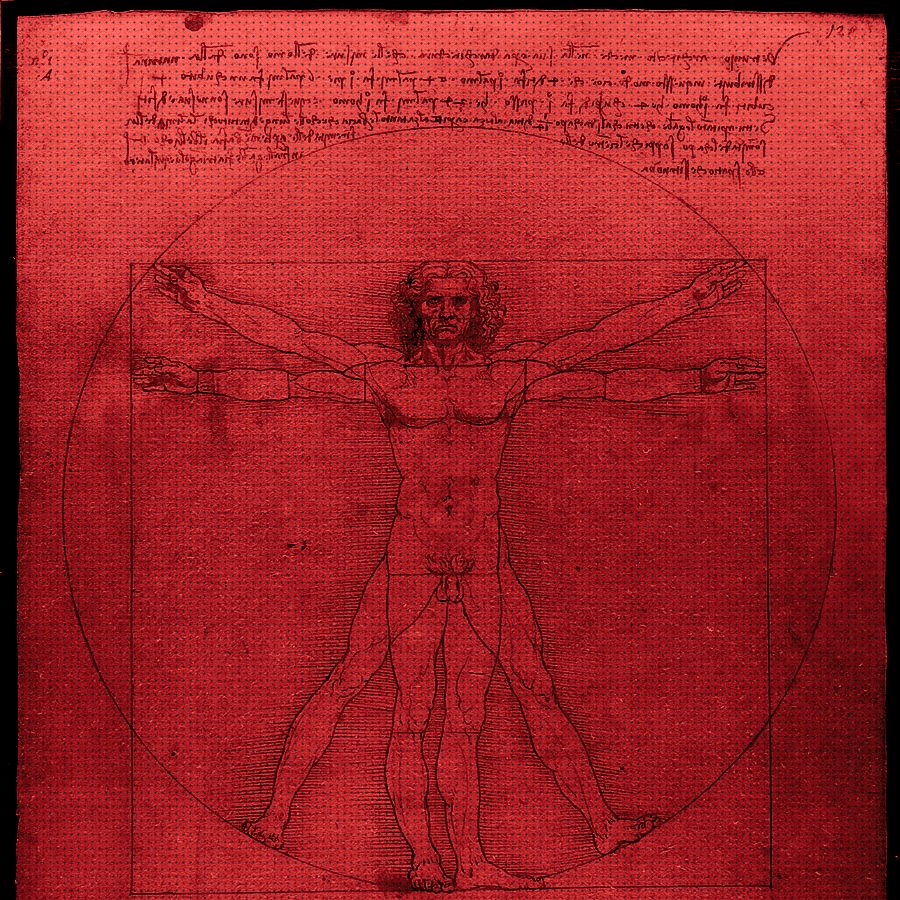
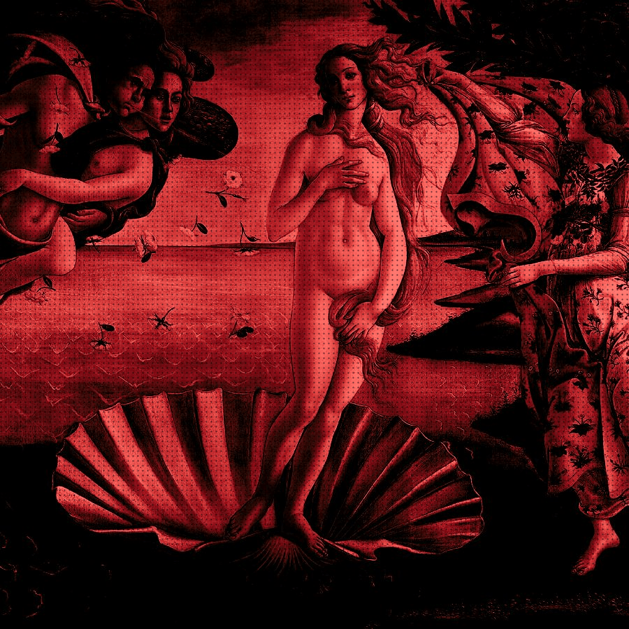
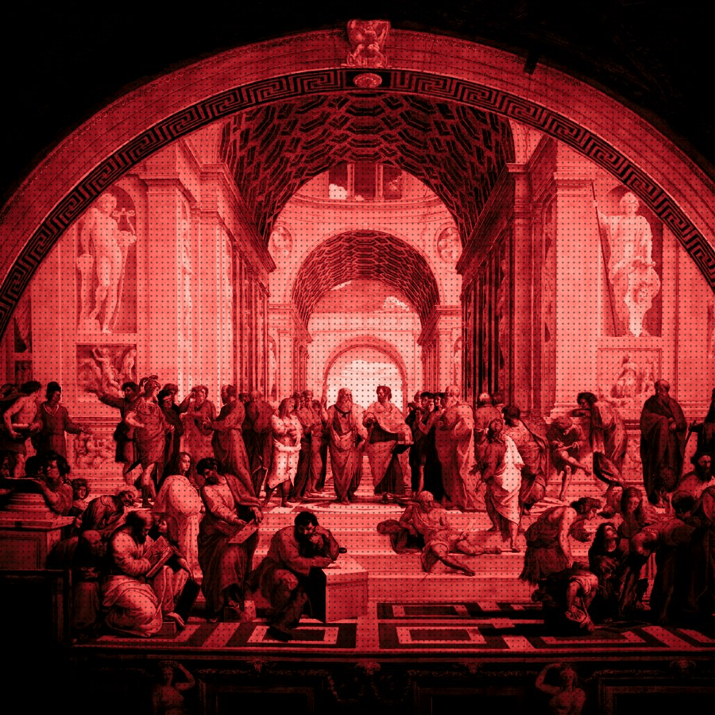
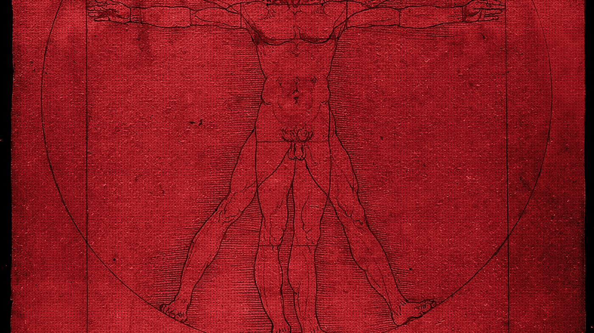
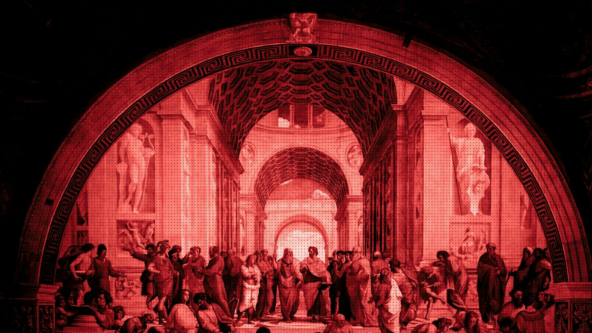
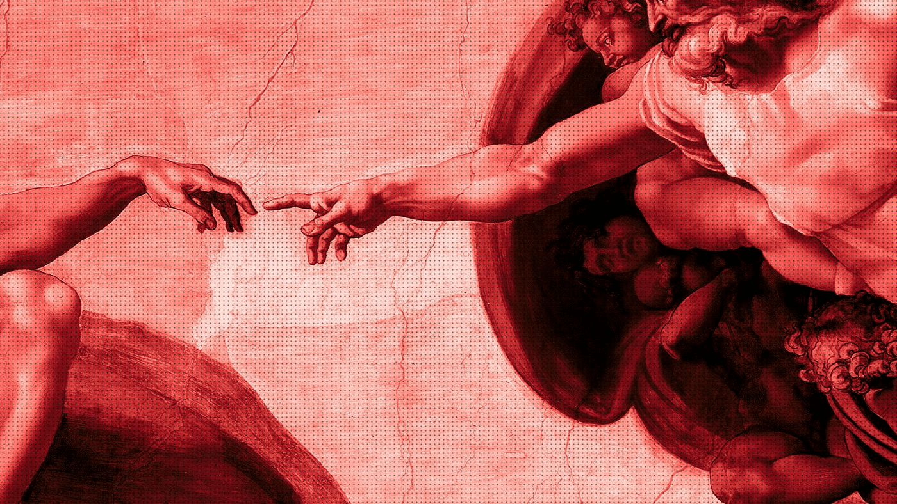
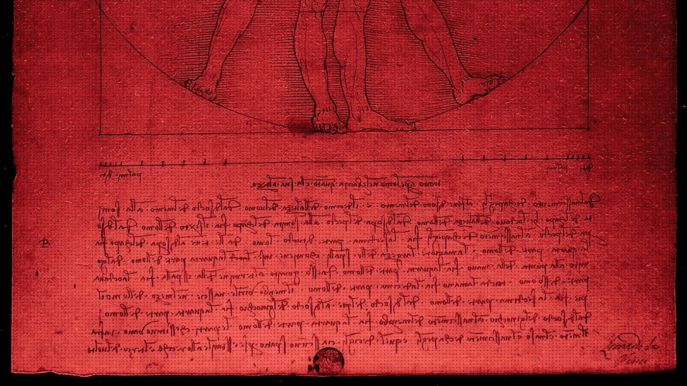
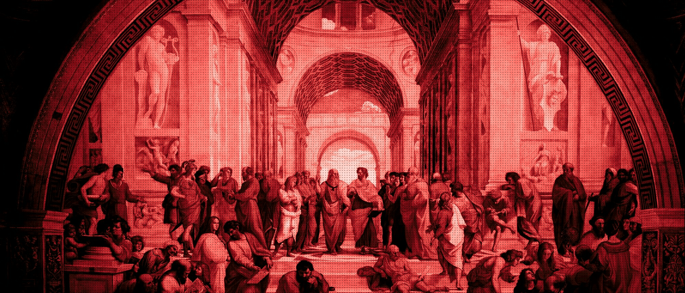
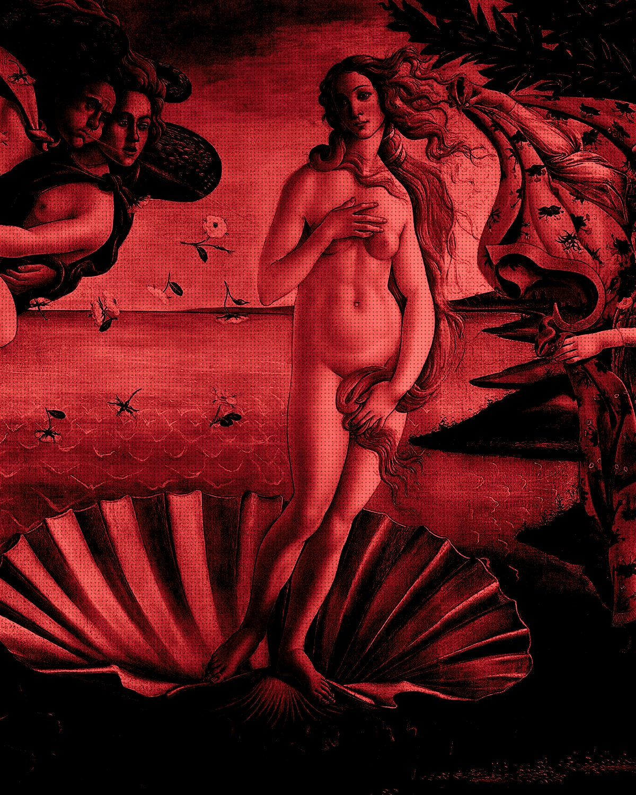

Arco is the infrastructure layer beneath autonomous agents — memory, automation, and on-chain perception, engineered like a Renaissance arch: load-bearing, precise, built to outlast whatever gets painted on top of it.

Every project, preference, and past fix is written to durable storage and retrieved by relevance, not by keyword.

Natural-language jobs run unattended on a real scheduler — no cron syntax, no polling, no babysitting.

Wallets, contracts, and mempool activity stream in as first-class signals an agent can reason over.
The duotone is the surface. Underneath it a scheduler, a model router, and a memory store are doing real, measurable work — every second, across every agent we host. Nothing below is a mockup; it's what the studio floor actually looks like.
| Capability | Tool calls |
|---|
Every message, file, webhook, and on-chain event lands in one ingestion loop — normalized, timestamped, and ranked before an agent ever sees it.
40+ connectors liveA router scores the task and picks the cheapest model that can actually do it, escalating up the chain only when confidence drops.
12 model providersTool calls run inside a sandbox tier matched to the risk — read-only, write-scoped, or fully isolated — before anything touches a live system.
3 sandbox tiersOutcomes compress into durable memory and get indexed, so the next run starts already knowing what the last one learned.
2.1B embeddings stored↳ then back to Perceive — the loop never fully closes, it just gets faster.
Telegram, Discord, Slack, WhatsApp, terminal — one agent, one memory, every surface.
It learns your projects, auto-generates skills, and never repaints over what it already solved.

Natural-language scheduling for reports and briefings, running unattended, on time, every time.

Isolated subagents with their own conversations and tools, for zero-context-cost pipelines.

Web search, browser automation, vision, and multi-model reasoning, called on as needed.

Sandboxed runs — local, Docker, or remote — kept apart from the rest of the studio.

"We did not want a dashboard. We wanted a studio — somewhere an agent could apprentice, make mistakes on scrap canvas, and eventually paint something you'd hang on the wall." — from the Arco manifesto
Arco ships as source, not a service. Clone it, read every line, fork the studio, or send a patch — there's no paywall between you and the code.
Browse The Source